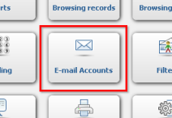
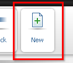

|  | To start using functionalities described in this section you need to have an e-mail account and add its specifications to epesi. To do this go to Menu -> My settings -> Control panel. While there choose "E-mail Accounts" button (on the picture). Here you can see the list of your e-mail accounts that have been added to epesi. If you're in this section for the first time, it will probably be empty. |
|  | To add your account, click the "New" button from Action Bar (on the picture). It will direct you to a filling form described below. |